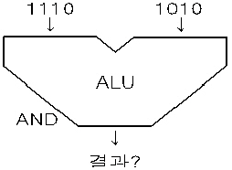
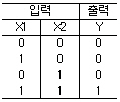
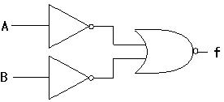
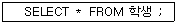
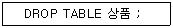
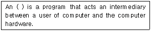

정보처리기능사 (2004-04-04 기출문제)
1과목: 전자 계산기 일반
1. JK 플립플롭(Flip Flop)에서 보수가 출력되기 위한 입력값 J, K의 입력 상태는?
- J=0, K=1
- J=0, K=0
- J=1, K=1
- J=1, K=0
(정답률: 88%)

2. 입력단자와 출력단자가 반대가 되는 즉 "0"이면 "1", "1"이면 "0"이 되는 회로는?
- AND 회로
- OR 회로
- NOT 회로
- Flip-Flop 회로
(정답률: 77%)
3. 주기억장치에서 자료 표현의 최소 단위는?
- 셀(Cell)
- 바이트(Byte)
- 레코드(Record)
- 블록(Block)
(정답률: 75%)
4. 다음 그림의 연산결과는?

- 1001
- 1101
- 1010
- 1110
(정답률: 84%)
5. 동시에 여러 개의 입·출력장치가 작동되도록 설계된 채널은?
- Simplex Channel
- Register Channel
- Selector Channel
- Multiplexer Channel
(정답률: 89%)
6. 불대수의 정리 중 옳지 않은 것은?
- A·A = A
- A·1 = A
- A + A = 1
- 1 + A = 1
(정답률: 74%)
7. 142(8)를 10진수로 변환하면?
- 88
- 98
- 108
- 118
(정답률: 68%)
8. 다음 진리표와 같이 연산이 행해지는 게이트(Gate)는?

- AND
- OR
- XOR
- NAND
(정답률: 81%)
9. 입·출력장치와 주기억장치 사이에 위치하여 데이터 처리 속도의 차이를 줄이는데 도움이 되는 장치는?
- 입·출력 채널
- 인덱스 레지스터
- 연산장치
- 명령 해독기
(정답률: 71%)
10. 산술 및 논리연산의 결과를 일시적으로 기억하는 레지스터(Register)는?
- Accumulator
- Memory Buffer Register
- Memory Address Register
- Instruction Register
(정답률: 67%)
11. 레지스터 중 Program Counter의 기능을 바르게 설명한 것은?
- 현재 실행중인 명령어의 내용을 기억한다.
- 주기억장치의 번지를 기억한다.
- 연산의 결과를 일시적으로 보관한다.
- 다음에 수행할 명령어의 번지를 기억한다.
(정답률: 70%)
12. 프로그램이 컴퓨터의 기종에 관계없이 수행될 수 있는 성질을 의미하는 것은?
- 신뢰성
- 가용성
- 안정성
- 호환성
(정답률: 81%)
13. 다음 논리회로의 논리식은?

- f = A + B'
- f = A' + B
- f = A·B
- f = A + B
(정답률: 49%)
14. 기억장치에 액세스(Access)할 필요 없이 스택(Stack)을 이용하여 연산을 행하는 명령어 형식은?
- 2 - 주소명령어
- 3 - 주소명령어
- 0 - 주소명령어
- 1 - 주소명령어
(정답률: 80%)
15. 명령어 내의 오퍼랜드 부분의 주소가 실제 데이터의 주소를 가지고 있는 포인터의 주소를 나타내는 방식으로, 데이터 처리에 대한 유연성이 좋으나 주소 참조 횟수가 많다는 단점이 있는 주소지정 방식은?
- 즉시 주소 지정
- 계산에 의한 주소 지정
- 간접 주소 지정
- 직접 주소 지정
(정답률: 55%)
16. 인스트럭션(Instruction)을 가장 바르게 나타낸 것은?
- 오류검색 코드 형식
- 자료의 표현과 주소 지정 방식
- 주프로그램과 부 프로그램
- 명령 코드부와 번지부로 구성
(정답률: 61%)
17. 8bit를 1Word로 이용하는 컴퓨터에서 Op Code를 3bit 사용하면 인스트럭션을 몇 가지 사용할 수 있는가?
- 6
- 16
- 8
- 4
(정답률: 70%)
18. 컴퓨터 시스템에 예기치 못한 일이 일어났을 때, 그것을 제어프로그램에 알려 CPU가 하던 일을 멈추고 다른 작업을 처리하도록 하는 방법을 무엇이라 하는가?
- 모듈(Module)
- 로테이트(Rotate)
- 교착상태(Deadlock)
- 인터럽트(Interrupt)
(정답률: 59%)
19. 전가산기(Full Adder)는 어떤 회로로 구성되는가?
- 반가산기 1개와 AND 게이트로 구성된다.
- 반가산기 2개와 AND 게이트로 구성된다.
- 반가산기 1개와 OR 게이트로 구성된다.
- 반가산기 2개와 OR 게이트로 구성된다.
(정답률: 71%)
20. 마이크로프로세서의 구성에 해당하지 않는 것은?
- 출력장치
- 레지스터
- 제어장치
- 연산장치
(정답률: 52%)
2과목: 패키지 활용
21. Windows용 프리젠테이션에서 화면 전체를 전환하는 단위를 의미하는 것은?
- 개요
- 개체
- 스크린 팁
- 쪽(슬라이드)
(정답률: 84%)
22. 기업체의 발표회나 각종 회의 등에서 빔 프로젝트 등을 이용하여 제품에 대한 소개나 회의 내용을 요약 정리하여 청중에게 효과적으로 전달하기 위한 도구를 의미하는 것은?
- 데이터베이스
- 프리젠테이션
- 스프레드시트
- 워드프로세서
(정답률: 88%)
23. 데이터베이스에서 사용되는 용어 중 데이터의 크기가 작은 것에서부터 큰 순서로 이루어진 것은?
- 데이터 → 필드 → 레코드 → 파일
- 데이터 → 레코드 → 필드 → 파일
- 데이터 → 레코드 → 파일 →필드
- 데이터 → 필드 → 파일 → 레코드
(정답률: 56%)
24. 스프레드시트의 기능으로 거리가 먼 것은?
- 수치계산 기능
- 슬라이드 쇼 기능
- 문서작성 기능
- 그래프 기능
(정답률: 77%)
25. 관계 데이터베이스에서 하나의 애트리뷰트가 취할 수 있는 같은 타입의 모든 원자값들의 집합을 무엇이라고 하는가?
- 인스턴스(Instance)
- 튜플(Tuple)
- 도메인(Domain)
- 스키마(Schema)
(정답률: 70%)
26. 다음 SQL 검색문의 의미로 옳은 것은?

- 학생 테이블에서 “*” 값이 포함된 레코드의 모든 필드를 검색하라.
- 학생 테이블에서 전체 레코드의 모든 필드를 검색하라.
- 학생 테이블에서 첫번째 레코드의 모든 필드를 검색하라.
- 학생 테이블에서 마지막 레코드의 모든 필드를 검색하라.
(정답률: 76%)
27. 상품(상품명, 단가, 수량) 테이블에 대하여 필드명 단가(1차 정렬키)는 오름차순, 필드명 수량(2차 정렬키)은 내림차순으로 검색하려고 한다. 이에 대한 SQL 문의 표기가 옳은 것은?
- SELECT 상품명, 단가, 수량 FROM 상품 ORDER BY 단가 ASC, 수량 DESC;
- SELECT 상품명, 단가, 수량 FROM 상품 ORDER BY 단가 DESC, 수량 ASC;
- SELECT 상품명, 단가, 수량 FROM 상품 ORDER BY 단가 ASC AND 수량 DESC;
- SELECT 상품명, 단가, 수량 FROM 상품 ORDER TO 단가 DESC, 수량 ASC;
(정답률: 56%)
28. 다음 SQL 질의어의 의미로 가장 적절한 것은?

- 상품 테이블을 삭제하라.
- 상품 필드를 제거하라.
- 상품 필드가 키인 인덱스를 제거하라.
- 상품 테이블의 인덱스만을 제거하라.
(정답률: 75%)
29. SQL 문의 형식으로 적당하지 않은 것은?
- DELETE - FROM - WHERE
- INSERT - INTO - VALUES
- UPDATE - FROM - WHERE
- SELECT - FROM - WHERE
(정답률: 66%)
30. 데이터베이스 관리자(DBA: Data Base Administration)의 임무로 거리가 먼 것은?
- 데이터베이스의 스키마를 수정하거나 물리적 저장 구조를 수정한다.
- 사용자들에게 데이터 접근권한을 부여하여 각각의 사용자가 접근할 수 있는 데이터들을 제어한다.
- 데이터베이스 도입 단계부터 실제 운영에 이르기까지 필요한 계획을 수립 및 수행한다.
- 응용 프로그래머들이 작성한 데이터베이스 응용 시스템을 통하여 데이터베이스를 접근하고 필요한 정보를 획득한다.
(정답률: 44%)
3과목: PC 운영 체제
31. Windows 98을 종료시키는 방법으로 옳지 않은 것은?
- 시작버튼에서 시스템종료를 누르고 시스템 종료를 선택한다.
- Ctrl + Alt + Del 키를 누르고 시스템 종료를 선택한다.
- 바탕화면에서 Alt + F4 키를 누르고 시스템 종료를 선택한다.
- Ctrl + Alt + Shift 키를 누르고 시스템 종료를 선택한다.
(정답률: 71%)
32. 도스(MS-DOS)의 명령어에 관한 설명 중 옳지 않은 것은?
- FC : 모든 열려 있는 파일을 닫는다.
- CD : 현재의 디렉토리를 변경한다.
- CLS : 화면을 깨끗이 지운다.
- MD : 새로운 디렉토리를 만든다.
(정답률: 59%)
33. Windows 98의 특징으로 가장 거리가 먼 것은?
- 모든 파일은 파일명 없이 아이콘으로 되어 있다.
- GUI(Graphic User Interface) 방식의 운영체제이다.
- 멀티 태스킹(Multi-Tasking)을 지원한다.
- 마우스 버튼을 눌러 원하는 작업을 실행할 수 있다.
(정답률: 69%)
34. Windows 98에서 64KB 이내의 텍스트형식의 파일만 지원하며 간단한 문서를 작성하거나 편집할 수 있는 보조프로그램은?
- 메모장
- 워드패드
- 한글
- 그림판
(정답률: 70%)
35. UNIX에서 현재 작업중인 디렉토리의 모든 파일을 보여주는 명령은?
- ls
- mv
- cd
- pwd
(정답률: 53%)
36. 페이지 대체 알고리즘에서 계수기를 두어 가장 오랫동안 참조되지 않은 페이지를 교체할 페이지로 선택하는 방법은?
- LFU
- LRU
- FIFO
- OPT
(정답률: 60%)
37. Unix 시스템은 "Shell" 이라는 명령어 해석기를 사용하는데, Shell의 종류로 옳지 않은 것은?
- Bourn Shell
- Korn Shell
- System Shell
- C Shell
(정답률: 56%)
38. 실시간 처리 시스템과 거리가 먼 것은?
- 급여 처리 시스템
- 온라인 예금 시스템
- 산업 제어 시스템
- 좌석 예약 시스템
(정답률: 56%)
39. 운영체제의 성능평가에 대한 설명으로 옳지 않은 것은?
- 사용 가능도는 시스템을 얼마나 빨리 사용할 수 있는가의 정도를 나타낸다.
- 처리능력은 수치가 높을수록 좋다.
- 응답시간은 수치가 높을수록 좋다.
- 신뢰도는 시스템이 주어진 문제를 얼마나 정확하게 해결하는가를 나타내는 척도이다.
(정답률: 75%)
40. Windows 98의 탐색기에서 연속적인 여러 개의 파일을 한꺼번에 선택할 때 마우스와 함께 사용하는 키는?
- Alt
- Shift
- Tab
- Ctrl
(정답률: 69%)
41. 도스(MS-DOS)에서 시스템 부팅시 반드시 필요한 파일이 아닌 것은?
- MSDOS.SYS
- CONFIG.SYS
- IO.SYS
- COMMAND.COM
(정답률: 64%)
42. Windows 98에서 한번의 마우스 조작만으로 현재 실행중인 응용 프로그램 사이를 오가며 작업할 수 있는 환경을 제공하는 것은?
- 작업 표시줄
- 바탕화면
- 시작 버튼
- 내 컴퓨터
(정답률: 79%)
43. Windows 98에서 새로운 하드웨어를 장착하고 시스템을 가동시키면 자동으로 하드웨어를 인식하고 실행하는 기능은?
- Interrupt 기능
- Auto & play 기능
- Plug & play 기능
- Auto & plug 기능
(정답률: 80%)
44. 다음 괄호 안의 내용으로 가장 적절한 것은?

- Operating System
- File System
- GUI
- Compiler
(정답률: 70%)
45. Windows 98에서 디스크 조각모음을 수행할 수 없는 매체는?(단, 각 매체는 로컬(Local) 매체를 의미한다.)
- CD-ROM
- 5.25 인치 플로피
- 하드디스크
- 3.5 인치 플로피
(정답률: 60%)
46. 도스(MS-DOS)에서 외부명령어가 아닌 것은?
- FORMAT
- LABEL
- COPY
- CHKDSK
(정답률: 61%)
47. Windows 98에서 도스 프롬프트 상태로 부팅되게 하는 멀티 부팅 메뉴는?
- Logged
- Step - by - step configuration
- Normal
- Command Prompt Only
(정답률: 54%)
48. Windows 98에서 현재 선택된 프로그램 창을 종료하는 단축키는?
- Alt + F1
- Shift + Esc
- Alt + F4
- Ctrl + Esc
(정답률: 80%)
49. CPU 스케줄링 알고리즘에서 규정시간 또는 시간 조각(Slice)을 미리 정의하여 CPU 스케줄러가 준비상태 큐에서 정의된 시간만큼 각 프로세스에 CPU를 제공하는 시분할 시스템에 적절한 스케줄링 알고리즘은?
- RR(Round-Robin)
- FCFS(First-Come-First-Served)
- SRT(Shortest Remaining Time)
- SJF(Shortest Job First)
(정답률: 55%)
50. Which is not Operating System?
- PASCAL
- UNIX
- DOS
- WINDOWS 98
(정답률: 66%)
4과목: 정보 통신 일반
51. 데이터통신에 있어서 전송 속도의 표준 기본 단위는?
- message/sec
- bit/sec
- word/sec
- character/sec
(정답률: 74%)
52. 일정한 폭을 가진 한 통신선로의 주파수 대역폭을 여러 개의 작은 대역폭으로 나누는 방식을 써서 전송선로를 분담하는 방식은?
- 시분할다중화방식
- 대역분할다중화방식
- 주파수분할다중화방식
- 선로스위칭다중화방식
(정답률: 50%)
53. 하나의 중앙처리장치에 통신회선을 통하여 여러 개의 입·출력장치를 항시 연결해서 자료를 처리하는 방식은?
- 중앙 처리 방식
- 온라인 시스템
- 오프라인 시스템
- 일괄 처리 방식
(정답률: 29%)
54. 통신선로를 공동으로 이용하기 위한 장비는?
- 변복조기
- 단말기
- 음향결합기
- 집중화기
(정답률: 22%)
55. ITU-T 권고안에서 아날로그 전화통신망을 이용한 프로토콜 시리즈는?
- K 시리즈
- X 시리즈
- T 시리즈
- V 시리즈
(정답률: 35%)
56. 정보통신에 관한 설명 중 가장 적합한 것은?
- 정보통신망에는 무선전화회선을 포함하지 않는다.
- 정보통신은 단말장치가 불필요한 것이 특징이다.
- 이용약관은 통신관계법령으로 규정하고 있다.
- 정보통신은 광케이블을 필히 그 구성요소로 한다.
(정답률: 44%)
57. 정보통신에서 Ferranti 현상을 옳게 기술한 것은?
- 수신단 신호의 절대값이 송신단 신호의 절대값보다 큰 현상
- 임피던스가 정합된 전송선로에서 발생하는 현상
- 지하 케이블에서 발생하는 현상
- 일반적인 통신 잡음 및 왜곡 현상
(정답률: 27%)
58. 국제전기통신부호 제5호(ITU-T NO.5)로 채택하여 데이터 통신용 전송부호로 이용되고 있는 부호는?
- ASCII 부호
- TELEX 부호
- MORSE 부호
- EBCDIC 부호
(정답률: 48%)
59. 데이터통신에서 교환기와의 회선접촉 불량에 의하여 주로 생기는 잡음은?
- 위상의곡(Phase Distortion)
- 감쇄(Attenuation)
- 비선형의곡(Nonlinear Distortion)
- 충격성잡음(Impulse Noise)
(정답률: 51%)
60. 동기식(Synchronous)전송의 특징이 아닌 것은?
- 동기를 하기 위해서 SYN란 캐릭터를 사용한다.
- 데이터를 저장하기 위한 메모리가 필요하다.
- 고속도 전송에 주로 이용된다.
- 전송효율이 비동기식 전송보다 낮다.
(정답률: 51%)